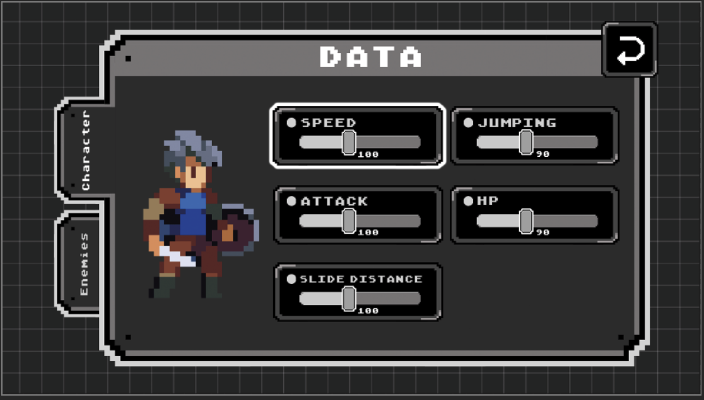

UAL · London College of Communication · 2022–2023UAL · 伦敦传媒学院 · 2022–2023
MA Prototype Collection硕士原型合集
Unity · C# · 3 Prototypes
A collection of three Unity prototypes made during my MA in Game Design at UAL. Explore the RPG puzzle here, then follow the links to the full MetaGame and Hypha case studies. UAL 游戏设计硕士期间的三款 Unity 原型合集。本页介绍 RPG 解谜，并链接到 MetaGame 与 Hypha 的完整案例，分别展示三种不同的机制探索。
Interstellar Adventure · combining mechanicsInterstellar Adventure · RPG 解谜
Teleportation, box pulling, ice breaking and thorn crossing form the puzzle vocabulary. The design explores how these actions interact and how their order changes the solution. Play the published browser build above. Team credits are available on the original itch.io page.
传送、拉箱、破冰与穿越荆棘构成解谜的基本动作。设计重点是动作如何相互作用，以及操作顺序如何影响解法。可在上方直接试玩已发布的网页版，完整团队署名见 itch.io 原页面。
MetaGame · three authored versionsMetaGame · 三个预设版本
I designed the three-stage level structure and implemented it in Unity. Playing, responding and revisiting turn development stages into a playable narrative. Read the case study →
我设计三阶段关卡结构，并用 Unity 实现。游玩、反馈与再体验，把开发阶段组织成可玩的叙事。查看完整案例 →

Hypha · timing with one inputHypha · 单键时机判断
A 48-hour collaborative jam game. I designed the mechanic and implemented it in Unity; Cheng Min created the art. Read the case study →
48 小时内完成的合作 Jam 游戏。我负责机制设计与 Unity 实现，Cheng Min 负责美术。查看完整案例 →